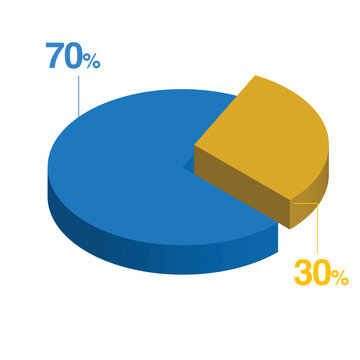

| | |
| Uit een overzichtsstudie over 25 jaar blijkt dat bij beide seksen verslaving evenveel voorkomt. Deze studie is gedaan onder verslaafden die behandeling hebben gehad en onder verslaafden die niet in behandeling zijn geweest. Maar als je naar klinische patiënten gaat kijken vind je een verschil, van alle verslaafden die behandeling krijgen zijn 70% mannen en 30% vrouwen. Verder bleek dat er ook verschillen zijn tussen mannen en vrouwen met oog op de ziekte: Mannen ontkennen vaker dat ze verslaafd zijn, terwijl vrouwen wel hun verslaving erkennen maar zich schuldig voelen en ervoor schamen. Vrouwen raken over het algemeen later in het leven verslaafd dan mannen. Bij vrouwen is er ook vaker sprake van co-morbiditeit, wat betekent dat er vaker een psychologisch probleem de oorzaak is voor hun verslaving. Meerdere onderzoeken laten zien dat bij vrouwen de oorzaak van hun gebruik vaak een trauma(-tische gebeurtenis) is. Vaak gaat het dan over huiselijk geweld en seksueel/emotioneel misbruik. Een onderzoek (uit de jaren 90) toonde aan dat 70% van vrouwen in behandeling slachtoffer was geweest van een vorm van mishandeling. Ook komen diezelfde vrouwen vaker uit een “ontwricht” gezin dan mannen. Zij hebben dan al op jongere leeftijd bijvoorbeeld een ouderrol op moeten nemen voor hun broer(s)/zus(sen). Verslavingen komen vaker voor onder mannen dan vrouwen (ongeveer 70% verslaafd is man). Maar in de afgelopen jaren is er een stijging in het aantal verslaafde vrouwen. Vrouwen ontwikkelen ook sneller een verslaving en hebben meer last van ontwenningsverschijnselen. |

|
Bronnen: